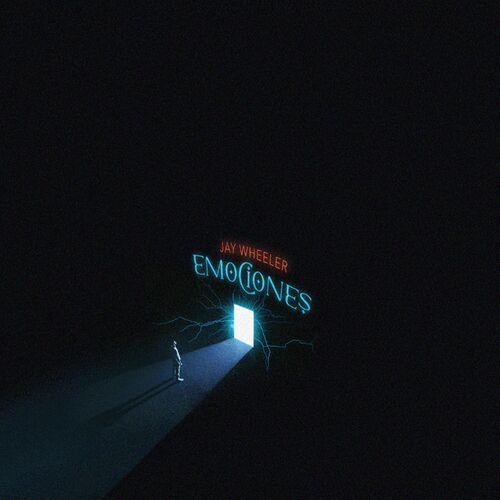
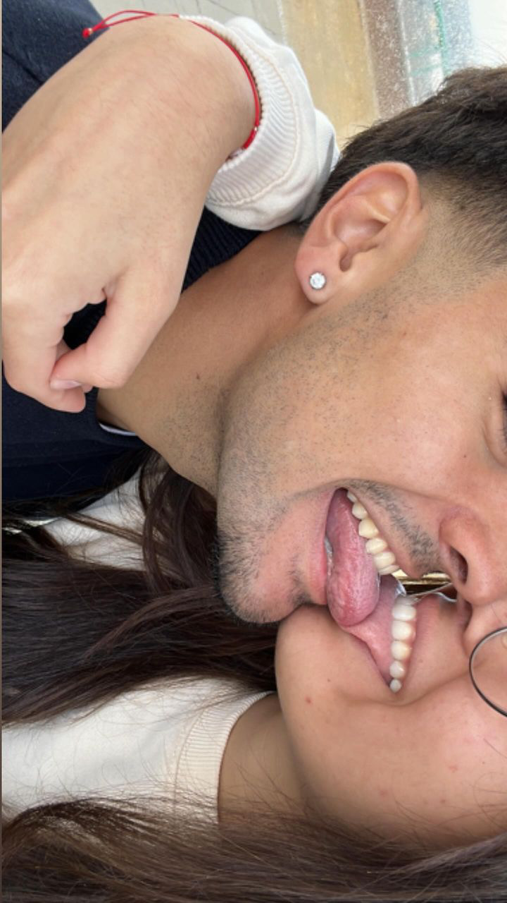

¡10 Meses Juntos!
Felices 10 meses mi amor, este sitio web es uno de los regalos que hay para ti, este está lleno de recuerdos y momentos especiales que hemos compartido juntos. ¡Te amo mucho!ü§ç
1. Esta tiene tu nombre

2. Algunas fotitos JEJEJE


3. Un poemilla romantic√≥nüòäü§ç
Mujer, yo hubiera sido tu hijo, por beberte
la leche de los senos como de un manantial,
por mirarte y sentirte a mi lado y tenerte
en la risa de oro y la voz de cristal.
Por sentirte en mis venas como Dios en los ríos
y adorarte en los tristes huesos de polvo y cal,
porque tu ser pasara sin pena al lado mío
y saliera en la estrofa -limpio de todo mal-.
Cómo sabría amarte, mujer, cómo sabría
amarte, amarte como nadie supo jamás!
Morir y todavía amarte más.
Y todavía amarte más y más.
-Pablo Neruda-